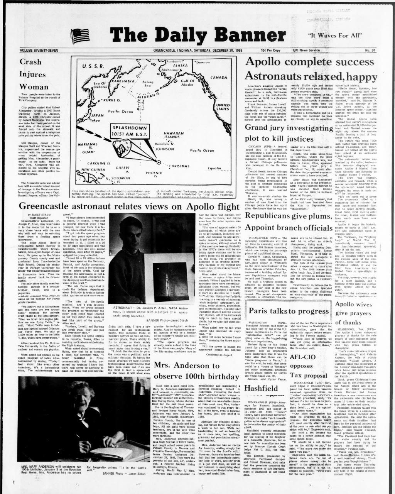
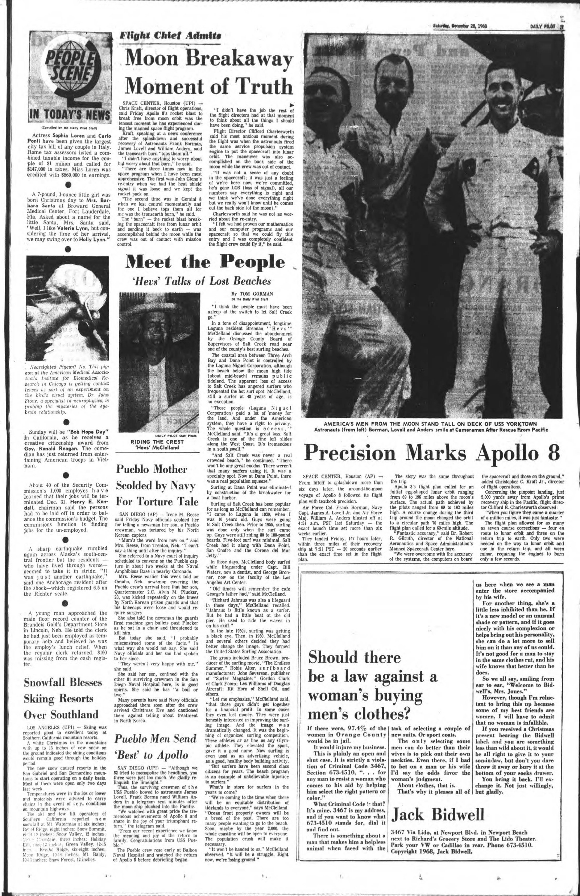
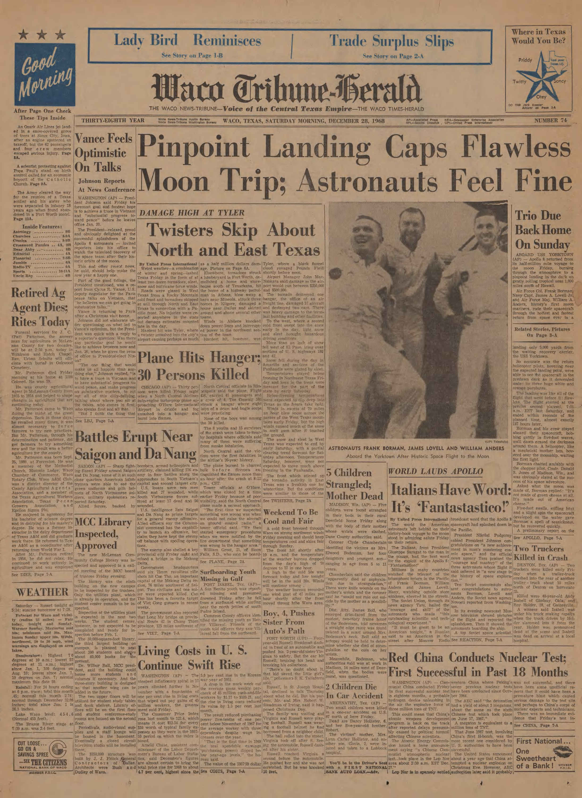

HN-672 · December 28, 1968 · Science, Invention & Technology > Astronomy & Space Exploration > Human spaceflight
Source: The Daily Banner, p. 1 — original page; NASA, Apollo 8 mission.
Report: A splashdown map accompanied news of Apollo 8's safe recovery, and a local story explored Greencastle astronaut Joseph P. Allen's views of the flight.
Assessment: Confirmed, with publication-date distinction. Frank Borman, Jim Lovell, and William Anders circled the Moon and splashed down December 27; the paper was dated December 28. The flight orbited the Moon but did not land, unlike Apollo 11 the next year.
Authentic images retrieved from Hoosier State Chronicles (Indiana State Library), Newport Beach Public Library (Orange Coast Pilot) and Baylor University Digital Collections (Quartex). Article crops are located using the archive's own OCR word coordinates and rendered at native crop resolution; article clips are assembled from the archive's own article-block images; page images marked "archive tiles" are stitched from the archive's own tiled page service at its 256-px tile cap; page images marked "issue PDF" are single pages rasterised from the archive's own issue PDF, with the page chosen by matching the headline against the PDF's text layer; page scans are reduced-size access renditions. No images were generated, mocked, or retouched.



Status: Archive images acquired
Authentic archive-owned image renditions were retrieved for this record and are displayed above. The source-acquisition manifest preserves the original pre-acquisition feasibility assessment.
URL (preserved verbatim): https://newspapers.library.in.gov/?a=d&d=TDB19681228-01.1.1
Saved research report: Historical_Newspaper_Event_Research_653-677_2026-10-23.md
Evidence note: A newspaper report means a historical publication made a claim; it does not establish that claim as fact. Contemporary reporting is separated from later scholarly context and our own assessment.